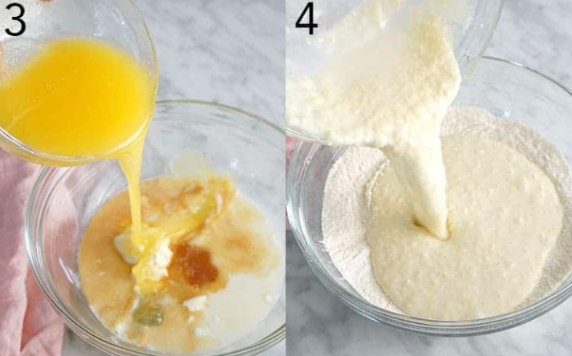
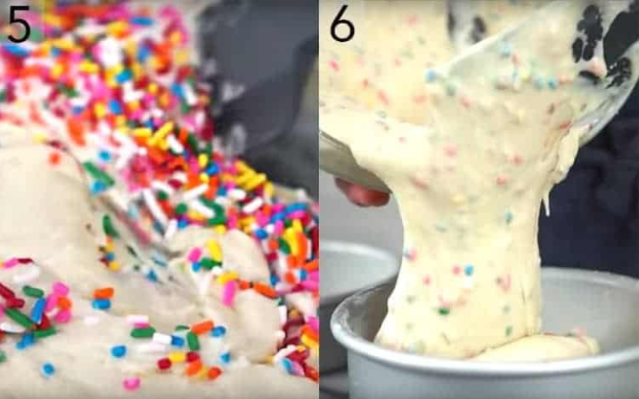
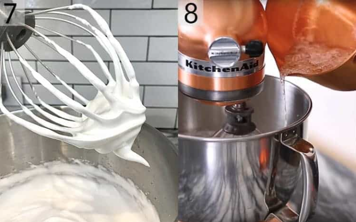
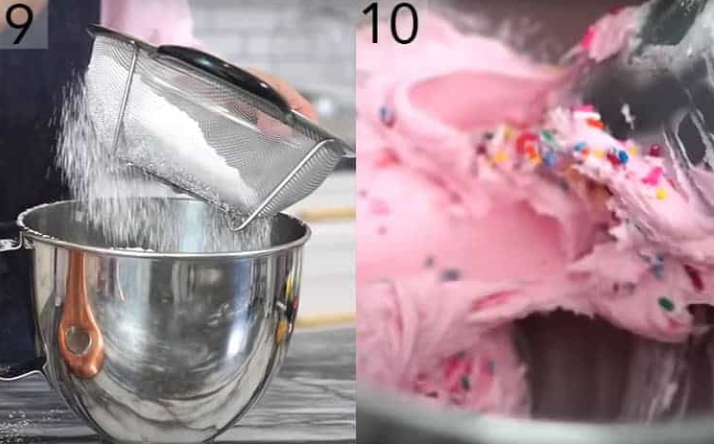
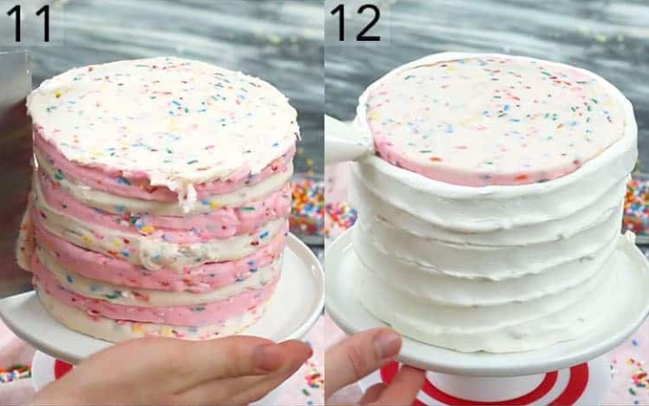
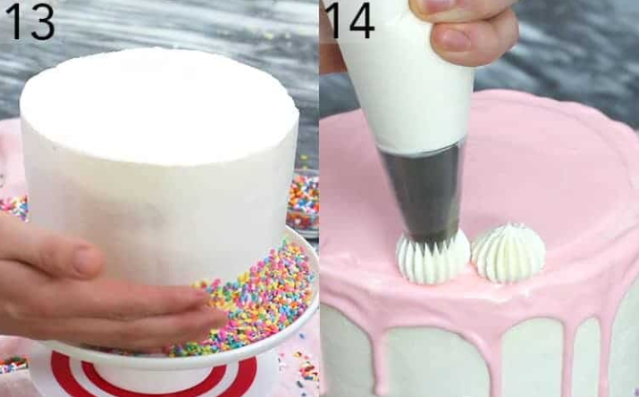

An ultra-moist and completely delicious vanilla cake filled with tons of sprinkles and creamy vanilla buttercream. The whole cake is enrobed in a silky Italian meringue buttercream and topped with a light pink ganache. This might be the perfect birthday cake, and yes this batter makes amazing funfetti cupcakes too!
1. Preheat oven to 340 degrees F. Butter and flour three 6-inch pans. I use cake strips on my pans for more even baking as well. Sift the dry ingredients together in a large bowl and whisk together.
2. Separate the room temperature eggs. You can use the yolks for a batch of French buttercream or custard.
3. Add the milk, sour cream, vanilla, egg whites, and butter into a bowl and whisk together. Don’t worry if you see little lumps.
4. Pour the wet mixture into the dry and mix together.
5. Add the sprinkles in last and fold into the batter.
6. Divide the mixture evenly into your three buttered and floured six inch pans. Bake at 340F for about 30-35 minutes or until the centers are springy to the touch and the edge pulls away from the pan.
7. For the Italian Meringue you’re doing two things at once: Beating the egg whites, cream or tartar, and salt in a stand mixer fitted with a whisk attachment while ALSO heating the 1 cup of sugar with 1/3 cup of water on medium high heat. Once the egg whites start to froth, SLOWLY sprinkle in 1/3 cup of sugar.
8. Once the egg whites reach the soft peak stage and the sugar reaches 235-240F it’s time to drizzle the hot sugar into the mixer while running on low. Run the mixer until the meringue is room temp then add the room temperature butter a tablespoon at a time. Set buttercream aside but remember to give a quick, final whip before using.
7. For the Italian Meringue you’re doing two things at once: Beating the egg whites, cream or tartar, and salt in a stand mixer fitted with a whisk attachment while ALSO heating the 1 cup of sugar with 1/3 cup of water on medium high heat. Once the egg whites start to froth, SLOWLY sprinkle in 1/3 cup of sugar.
8. Once the egg whites reach the soft peak stage and the sugar reaches 235-240F it’s time to drizzle the hot sugar into the mixer while running on low. Run the mixer until the meringue is room temp then add the room temperature butter a tablespoon at a time. Set buttercream aside but remember to give a quick, final whip before using.
9. Beat the butter until light and fluffy. Add the confectioners’ sugar and cream and mix.
10. Divide into 2 batches. Add pink food coloring to one batch. Add sprinkles to both. Mix together. Transfer into 4 piping bags. Add a pink and a white to one piping bag and snip off the tip.
11. Build the cake by piping the pink and white buttercream between each layer then covering the cake in a thin layer of buttercream. I alternated pink and white but it doesn’t really show so you don’t have to if you’re pressed for time. Smooth the outside with a bench scraper and offset spatula. You can chill the cake if it feels a bit unstable.
12. Give the Italian buttercream a quick whip then pipe it onto the outside and smooth.
13. Add the sprinkles to the side of the cake. I like to use confetti sprinkles but and kind works. You can use your hand to press them onto the cake or even toss them at the side of the cake.
14. Melt candy melts, white chocolate and cream in the microwave until smooth. Add small amount of soft pink food coloring. Transfer to a piping bag. Add ganache to the top of the cake. Smooth to create a drip look. Pipe dollops of Italian meringue buttercream around the edge with an 869 tip.
Heat the cream up to just under a boil then pour over white chocolate and butter. You can play with the proportions on the ganache and use only cream and white chocolate if you desire as well. Allow to site for a couple units and then whisk until there are no lumps.
You might have to pop it into the microwave for 20 seconds on half power if there are bits of unmelted chocolate. Add a drop of oil-based soft pink food coloring (I use AmeriColor soft gel food coloring). The color will lighten slightly when the ganache cools. If you’re using white chocolate be warned that water-based dyes will make the chocolate seize up!